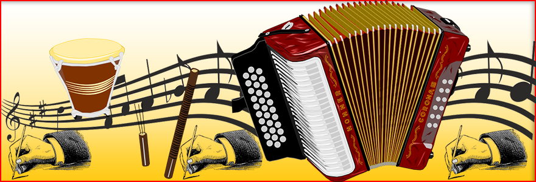
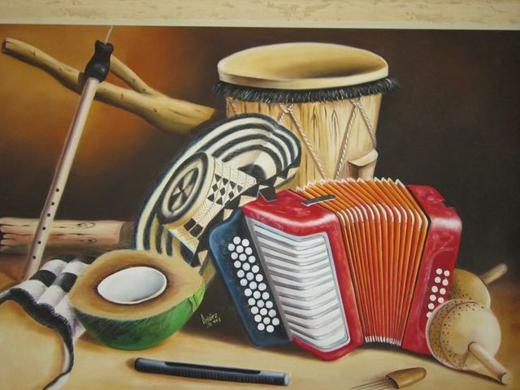

Descubre todo lo que necesitas saber sobre el género musical más popular de Colombia
ExplorarEl vallenato es un género musical tradicional de la región Caribe de Colombia, que se originó a mediados del siglo XIX en la zona rural de Valledupar, Cesar. La música vallenata es una mezcla de ritmos indígenas, africanos y europeos, y se caracteriza por el uso de acordeón, caja vallenata y guacharaca.
Los instrumentos del vallenato son los que se utilizan para interpretar la música vallenata, un género musical originario de la región caribeña de Colombia que tiene sus raíces en las tradiciones folklóricas de los campesinos de la zona. Además de estos instrumentos principales, también se utilizan otros instrumentos de percusión como la tambora, la caja china y las maracas, así como el bajo eléctrico, la guitarra y otros instrumentos de cuerda que se usan para armonizar y complementar la melodía y el ritmo.
Diomedes Díaz es uno de los artistas más populares y controversiales de la historia del vallenato. Conocido como "El Cacique de la Junta", Diomedes es famoso por sus letras emotivas y su estilo único de canto.
Conocer másSilvestre Dangond es uno de los artistas más populares y exitosos del vallenato en la actualidad. Nacido en Urumita, La Guajira, Silvestre ha ganado varios premios y reconocimientos por su música y su estilo innovador.
Conocer másMartín Elías Díaz Acosta (1990-2017) fue un cantante colombiano de música vallenata, hijo del legendario cantautor Diomedes Díaz. Nació en Valledupar, Colombia, y desde muy joven comenzó a mostrar su talento musical, cantando en los coros de las canciones de su padre.
Conocer más| Festival | Fecha | Ubicación |
|---|---|---|
| Festival de la Leyenda Vallenata | 26-30 de abril | Valledupar, Cesar |
| Festival de la Leyenda Vallenata | 26-30 de abril | Valledupar, Cesar |
| Festival de la Cumbia y el Vallenato | 11-14 de octubre | El Banco, Magdalena |
| Festival de la Nada | 15-18 de noviembre | La Paz, Cesar |
El vallenato es un género musical originario de la región caribeña de Colombia que tiene sus raíces en las tradiciones folklóricas de los campesinos de la zona. Se dice que el vallenato nació en el valle del río Cesar, en la región de La Guajira, a principios del siglo XX.
Los primeros vallenatos eran cantos improvisados que los campesinos entonaban mientras trabajaban en el campo, y que hablaban de amor, desamor, la vida en el campo y las tradiciones de la región. Con el tiempo, el vallenato se fue sofisticando y se incorporaron nuevos instrumentos y arreglos, convirtiéndose en uno de los géneros musicales más populares y representativos de Colombia.